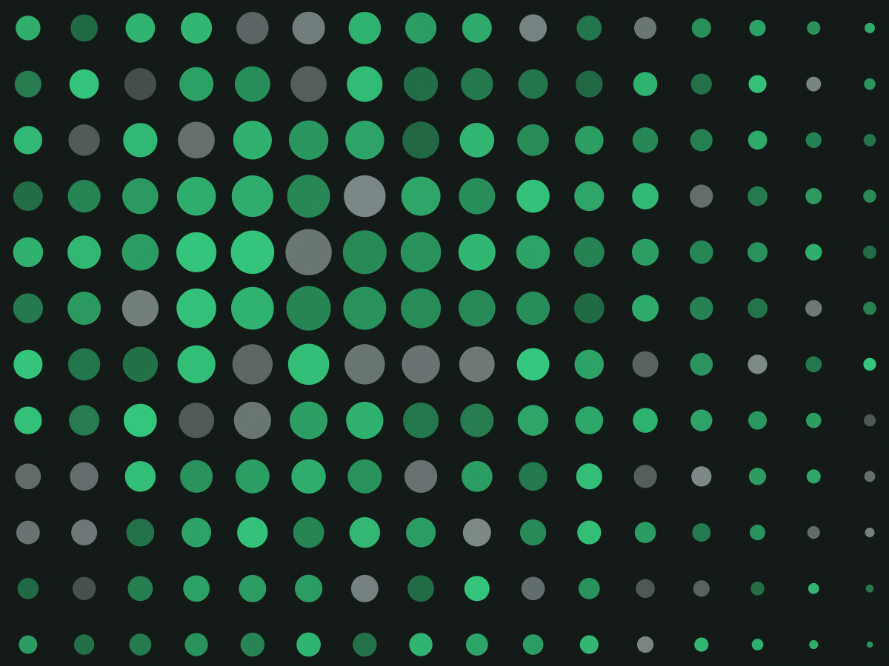

Remoto · escopo fechado
Segurança para empresa de 30 a 300 pessoas
Auditoria técnica, política de acesso e plano de resposta a incidente. Cada trabalho tem escopo escrito, prazo e um relatório com severidade por item — não uma mensalidade de monitoramento que ninguém abre.
Ver os quatro serviços
Quatro trabalhos, com preço e prazo
Todos são remotos e terminam com um documento que o seu time consegue executar sem nós. Se preferir que a gente execute, entra como fase separada no orçamento.
- Auditoria técnica
- Revisão de perímetro, servidores, repositórios e permissões em nuvem. Inclui teste de senha fraca e revisão de dependência.
- Política de acesso e MFA
- Mapeamento de quem acessa o quê, desenho de mínimo privilégio e implantação de segundo fator nos sistemas críticos.
- Plano de resposta a incidentes
- Quem liga para quem, em que ordem, com qual prazo. Inclui simulação de mesa com o time de plantão.
- Teste de restauração de backup
- Restaure um servidor de verdade e cronometre. É o serviço mais barato da lista e o que mais encontra problema.
Como um trabalho corre
-
Escopo escrito
Antes de qualquer acesso: o que será testado, o que fica de fora e o que acontece se algo crítico aparecer no meio. Assinado pelos dois lados.
-
Coleta
Acesso somente leitura, com conta nominal e registro de sessão. Você recebe o log no fim do trabalho.
-
Relatório com severidade
Cada achado com crítico, alto, médio ou baixo, o impacto em uma frase e o esforço estimado para corrigir.
-
Remedição em 90 dias
Uma nova verificação dos itens críticos e altos, sem custo, entre 60 e 90 dias depois. É a parte que mostra se o achado foi realmente corrigido.
Se o incidente já está acontecendo
Ligue. A primeira hora é de contenção, não de contrato — o trabalho de resposta é combinado depois, com o cliente já sabendo o tamanho do problema.
Plantão de 7h às 23h, sete dias. Fora desse horário, o telefone cai no direto de um dos sócios.
- Primeira horaIsolar host, revogar credencial, preservar evidência
- Primeiras 24hLinha do tempo do que entrou e por onde
- Semana 1Relatório e plano de correção com prioridade
- Semana 4Revisão do plano de resposta com o time
“O teste de backup levou uma semana e derrubou uma suposição de três anos: o backup rodava, mas a restauração falhava no banco.”
“Trouxeram 23 achados. A gente corrigiu 6 críticos em dois meses e nunca mais abrimos o relatório antigo — o novo é o que vale.”
Antes de contratar
Uma call de 30 minutos, sem custo, para saber se o escopo faz sentido. Se a sua empresa tem menos de 20 pessoas, provavelmente vale começar por MFA e backup, sem nos contratar.
- contato@blindar.sec.br
- Telefone
- (11) 4002-8190
- Plantão
- 7h às 23h, todos os dias
- Atendimento
- Só remoto, em todo o Brasil